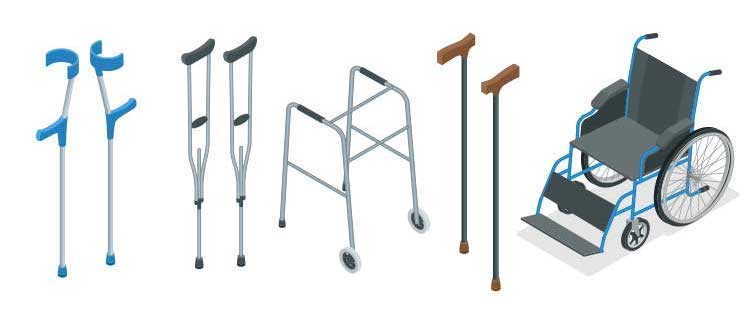

The Chosen Assistive Technologies
Text-to-speech (TTS)
Text-to-speech (TTS) is a form of assistive technology that converts written text into spoken, synthesized speech. TTS systems use complex algorithms and voice modeling to generate natural-sounding speech output from digital text inputs. This technology has proven invaluable for individuals with visual impairments, learning disabilities, or other conditions that make reading difficult.
One of the key benefits of TTS is that it can dramatically improve accessibility and independence for users. Rather than requiring someone to physically read aloud, TTS allows the user to simply listen to the content. This opens up a wide range of reading materials, from books and websites to documents and emails, to those who might otherwise struggle with the visual component. TTS can be especially helpful for students who need to access textbooks and other classroom materials.
Over the years, TTS technology has steadily improved in terms of the quality and naturalness of synthetic voices. Early TTS systems often sounded robotic and mechanical, but modern voice models can now mimic human speech patterns, inflections, and emotional nuances with impressive realism. Many TTS programs also allow users to customize the voice characteristics, speaking rate, and other parameters to best suit their individual needs and preferences.
Beyond simply reading text aloud, advanced TTS applications can also incorporate additional functionality. Some tools offer features like text highlighting, bookmarking, and the ability to adjust the speed of playback. There are even TTS apps that can translate text between languages in real time, further expanding accessibility.
As TTS continues to evolve, researchers are exploring ways to make the technology even more natural and intuitive. This includes developing TTS systems that can understand the context and alter their tone and emphasis accordingly. The ultimate goal is to create TTS that is virtually indistinguishable from human speech, empowering users with disabilities to engage with digital content as seamlessly as their peers.
Braille Display
Braille displays, also known as refreshable braille displays, are assistive devices that allow users who are blind or have low vision to access digital information through the sense of touch. These hardware peripherals connect to computers, smartphones, or other electronic devices and translate on-screen text into braille characters that can be felt by the user's fingertips.
The core functionality of a braille display is to convey text-based information, such as from documents, web pages, or software interfaces, in a tactile format. Most braille displays have a row of braille cells, each of which can raise or lower pins to form the individual braille characters. As the user reads across the line, the braille cells update to display the next section of text.
Braille displays provide a critical bridge between digital content and the braille literacy that many blind and low-vision individuals rely on. By enabling access to computers, smartphones, and other technologies, these devices help to level the playing field and promote greater independence and inclusion. Users can navigate menus, read emails, browse the web, and even code or program using a braille display.
Over time, braille display technology has become more advanced, with higher-resolution displays, improved ergonomics, and wireless connectivity. Some modern braille displays also integrate features like refreshable graphics, navigation controls, and even text-to-speech capabilities. These enhancements make the devices more versatile and user-friendly for a wider range of applications.
Despite these advancements, access to braille displays remains a challenge for many who could benefit. The devices can be quite expensive, with professional-grade models costing thousands of dollars. There are also ongoing efforts to integrate braille display support directly into mainstream software and operating systems to increase availability and reduce barriers to adoption. As assistive technology continues to evolve, equitable access to braille displays will be crucial for ensuring digital inclusion for the blind and low-vision community.
Augmentative and Alternative Communication
Augmentative and alternative communication (AAC) refers to methods of communication that can supplement or replace spoken language for individuals with speech and language impairments. AAC encompasses a wide range of low-tech tools, such as communication boards and picture exchange systems, as well as high-tech electronic devices and software.
The primary purpose of AAC is to provide a means for people with disabilities to express their thoughts, needs, and ideas when they are unable to rely on natural speech alone. This might include individuals with autism, cerebral palsy, amyotrophic lateral sclerosis (ALS), or other conditions that affect speech and language abilities. AAC helps to bridge the gap and facilitate more effective communication.
AAC devices can range from simple, dedicated communication aids with prerecorded messages to highly advanced, customizable speech-generating devices (SGDs). Many modern SGDs utilize touchscreens, eye-tracking technology, or other alternative access methods to allow users to select words, phrases, or pictures that are then converted into synthesized speech output. Some even feature predictive text and machine learning to enhance the user experience.
Beyond just enabling basic communication, AAC systems can also help support cognitive, motor, and literacy development. The process of selecting and combining symbols or words to convey messages can strengthen language skills, while the technology itself may provide opportunities for learning and independence. AAC has been shown to positively impact quality of life, social interaction, and educational outcomes for many users.
As with other forms of assistive technology, accessing and funding AAC equipment can be a significant challenge for some individuals and their families. Insurance coverage, school policies, and the high cost of specialized devices all create potential barriers. Advocacy efforts and funding sources, such as Medicaid and state/local programs, aim to address these disparities and ensure that AAC is available to all who need it.
Other Types of Assistive Technologies
Assistive technology includes a wide variety of devices and solutions. Some common types include:
- Screen Magnifiers
- Voice Recognition Software
- Eye Tracking Devices
- Switch Interfaces
- Hearing Aids and Assistive Listening Devices
- Gesture-Based Interfaces
- Inking and Stylus-Based Interfaces
- Refreshable Braille Displays
- Closed-Circuit Television (CCTV) Magnifiers
- Screen Readers